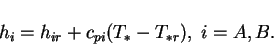
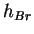
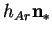

Neglecting the gravitational potential energy (since the cavities of interest
are of limited vertical extent, see Spiegel & Veronis 1960),
the steady-state energy equation is (Bird et al. 1960, p. 561):
If the gas-vapour mixture is diathermanous (so that the radiant
energy flux can be handled separately), and the Dufour effect, viscous
stresses
and the advection of kinetic energy are
negligible, the energy flux is (Bird et al. 1960, p. 566):
If the gas and vapour form a `perfect gaseous mixture', so that the partial
specific heat capacities, defined by (Guggenheim 1959, p. 212)
|  | (2.14) |
Whence,
In (2.15):
The last two terms in (2.15) are divergence-free, by (2.6) and (2.5), and so have no effect on the energy equation (2.11). They must be included, however, in the energy flux at the boundary. Both terms are also of arbitrary magnitude, since enthalpies are only defined by their changes, rather than absolutely (Guggenheim 1959, pp. 11, 32). The reference enthalpy of the noncondensable gas, , may be set to zero, since all the cavities considered in this project are impermeable to the gas. The reference enthalpy of the vapour on the other hand must include the heat of vaporization or sublimation, since it is the term  that accounts for the latent heat.
Substituting (2.15) into (2.11),
with  assumed constant, the primitive
thermal energy equation is:
assumed constant, the primitive
thermal energy equation is: